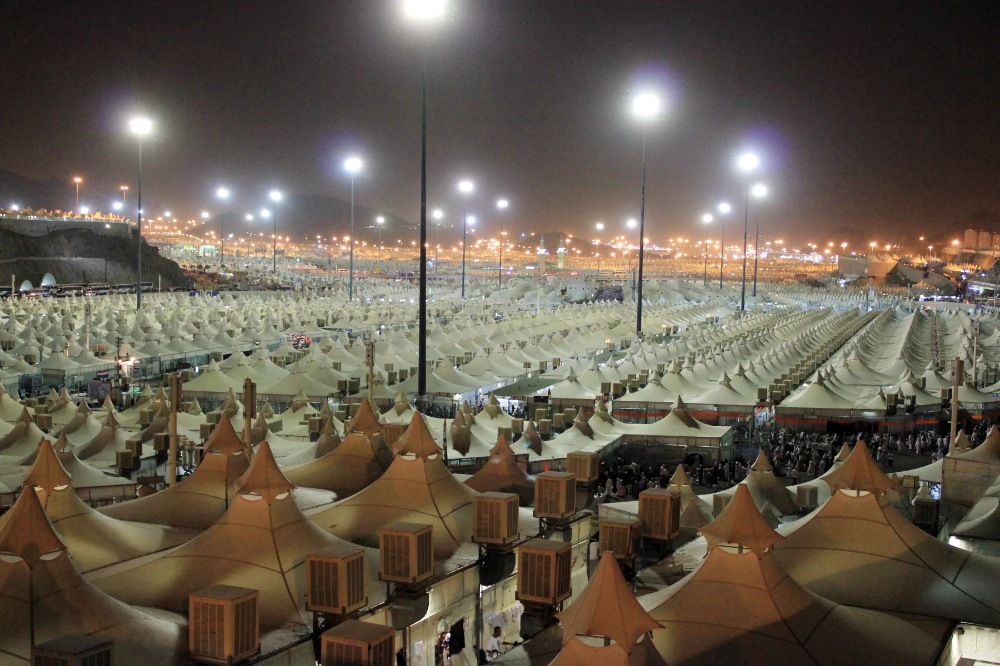
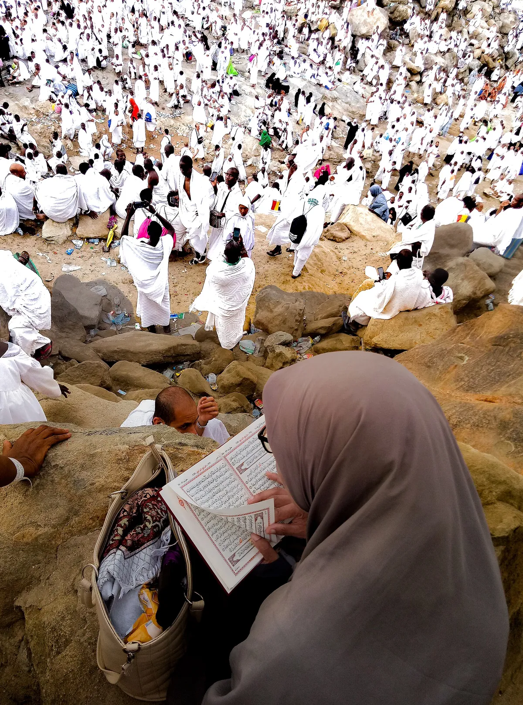

Antrian Haji Khusus: Berapa Lama Masa Tunggu, Biaya, dan Cara Daftar Resmi

Salah satu pertanyaan paling sering diajukan calon jamaah adalah: berapa lama antrian haji khusus? Wajar saja, sebab masa tunggu haji reguler di banyak daerah kini sudah sangat panjang, sehingga banyak orang mencari jalur yang lebih cepat namun tetap resmi dan sesuai regulasi.
Artikel ini merangkum informasi lengkap seputar antrian haji khusus — mulai dari perkiraan masa tunggu, dasar hukum kuota, rincian biaya, cara mendaftar, hingga cara mengecek estimasi keberangkatan Anda sendiri. Seluruh penjelasan mengacu pada regulasi resmi, khususnya Undang-Undang Nomor 8 Tahun 2019 dan ketentuan Kementerian Agama.
Apa Itu Haji Khusus?
Haji khusus — dulu populer dengan istilah ONH Plus — adalah penyelenggaraan ibadah haji yang dikelola oleh Penyelenggara Ibadah Haji Khusus (PIHK), yaitu biro perjalanan yang telah mengantongi izin resmi dari Kementerian Agama. Berbeda dari haji reguler yang dikelola langsung oleh pemerintah, haji khusus menawarkan layanan yang lebih premium: hotel lebih dekat ke Masjidil Haram dan Masjid Nabawi, durasi perjalanan lebih singkat, serta bimbingan yang lebih personal.
Sebagai konsekuensinya, biaya haji khusus lebih tinggi. Namun bagi banyak jamaah, keunggulan terbesarnya bukan sekadar fasilitas, melainkan masa tunggu yang jauh lebih pendek dibanding haji reguler.
Berapa Lama Masa Tunggu (Antrian) Haji Khusus?
Secara umum, masa tunggu haji khusus saat ini diperkirakan berkisar 5 hingga 9 tahun sejak jamaah memperoleh nomor porsi. Bandingkan dengan haji reguler yang di banyak provinsi sudah menembus 26 tahun — bahkan di beberapa daerah dengan peminat sangat tinggi bisa jauh lebih lama lagi.
Yang perlu dipahami, angka masa tunggu ini bersifat estimasi, bukan janji pasti. Lama antrian dipengaruhi oleh beberapa faktor:
- Besarnya kuota tahunan yang diberikan Pemerintah Arab Saudi kepada Indonesia, yang dapat berubah tiap tahun.
- Ada tidaknya kuota tambahan yang kadang diberikan Arab Saudi pada tahun tertentu.
- Jumlah pendaftar baru yang terus bertambah setiap tahun.
- Kebijakan dan prioritas seperti pelunasan dan percepatan untuk jamaah lanjut usia.
Karena itu, kepastian keberangkatan baru benar-benar diketahui setelah Anda memiliki nomor porsi dan mengikuti pengumuman resmi dari Kementerian Agama.
Ringkasnya: masa tunggu haji khusus ±5–9 tahun, sedangkan haji reguler bisa 26 tahun atau lebih. Selisih inilah yang membuat banyak jamaah memilih jalur haji khusus.
Mengapa Antrian Haji Khusus Lebih Singkat?
Jawabannya terletak pada sistem kuota. Berdasarkan Undang-Undang Nomor 8 Tahun 2019 tentang Penyelenggaraan Ibadah Haji dan Umrah, Pasal 64 ayat (2), kuota haji Indonesia dibagi menjadi dua: 92% untuk haji reguler dan 8% untuk haji khusus.
Meskipun porsinya lebih kecil (8%), jumlah pendaftar haji khusus secara proporsional juga jauh lebih sedikit dibanding lautan pendaftar haji reguler. Perbandingan antara kuota dan jumlah antrean inilah yang membuat perputaran daftar tunggu haji khusus berlangsung lebih cepat.

Rincian Biaya Haji Khusus
Biaya haji khusus terdiri dari beberapa komponen. Berikut gambaran umumnya:
- Setoran awal porsi: USD 4.000. Ini adalah syarat untuk mendapat nomor porsi dan masuk antrian resmi. Dana ini disetorkan langsung ke rekening Bank Penerima Setoran (BPS) BPIH pada bank syariah yang ditunjuk negara — bukan ke rekening pribadi travel.
- Biaya minimal (referensi pemerintah): USD 8.000. Kementerian Agama menetapkan biaya minimal penyelenggaraan haji khusus sebagai batas bawah standar pelayanan agar jamaah tidak ditelantarkan.
- Biaya riil paket premium: berkisar USD 12.000–16.000 atau lebih. Dalam praktiknya, PIHK bersaing menawarkan fasilitas bintang 5, hotel sedekat mungkin dengan Masjidil Haram, dan layanan tambahan, sehingga total biaya paket lebih tinggi dari batas minimal.
Selalu minta rincian biaya secara tertulis dari PIHK: apa saja yang sudah termasuk (tiket, visa, hotel, konsumsi, bimbingan) dan apa yang belum, agar tidak ada kejutan biaya di kemudian hari.
Cara Mendaftar Haji Khusus
Alur pendaftaran haji khusus relatif sederhana, namun harus dilakukan melalui PIHK resmi:
- Pilih PIHK berizin resmi Kementerian Agama dan pelajari paket yang ditawarkan.
- Lengkapi dokumen seperti KTP, kartu keluarga, paspor, dan pas foto sesuai ketentuan.
- Bayar setoran awal USD 4.000 melalui bank syariah penerima setoran untuk memperoleh nomor porsi.
- Simpan nomor porsi sebagai bukti resmi Anda telah masuk antrian haji khusus.
- Lunasi biaya dan ikuti bimbingan manasik saat tahun keberangkatan Anda mendekat.
Cara Cek Estimasi Keberangkatan lewat Nomor Porsi
Setelah memiliki nomor porsi, Anda bisa memantau sendiri perkiraan tahun keberangkatan secara online melalui kanal resmi Kementerian Agama:
- Buka aplikasi Pusaka atau Haji Pintar, atau kunjungi situs haji.kemenag.go.id.
- Pilih menu Estimasi Keberangkatan Haji.
- Masukkan nomor porsi Anda, lalu tekan cari.
- Sistem akan menampilkan nama, posisi antrian pada kuota khusus, serta perkiraan tahun keberangkatan dalam kalender masehi dan hijriah.
Tips Memilih PIHK yang Resmi dan Aman
Karena menyangkut dana besar dan waktu bertahun-tahun, kehati-hatian memilih penyelenggara sangat penting:
- Pastikan izin PIHK resmi terdaftar di Kementerian Agama — jangan ragu memintanya dan mengeceknya.
- Jangan transfer ke rekening pribadi. Setoran porsi harus masuk ke rekening BPS BPIH resmi.
- Waspadai harga yang terlalu murah atau janji berangkat instan yang tidak masuk akal.
- Minta perjanjian tertulis yang memuat rincian biaya, fasilitas, dan hak jamaah.
Untuk panduan lebih rinci, baca juga artikel kami tentang cara memilih travel umrah dan haji yang resmi dan terpercaya.
Pertanyaan yang Sering Diajukan
Berapa lama masa tunggu haji khusus?
Diperkirakan sekitar 5–9 tahun sejak mendapat nomor porsi, jauh lebih singkat dari haji reguler yang bisa menembus 26 tahun. Angka ini estimasi dan bergantung pada kuota tahunan serta pengumuman resmi Kemenag.
Berapa setoran awal untuk porsi haji khusus?
USD 4.000, disetorkan langsung ke rekening BPS BPIH pada bank syariah yang ditunjuk negara, bukan ke rekening pribadi travel.
Apa dasar hukum kuota haji khusus?
UU Nomor 8 Tahun 2019 Pasal 64 ayat (2), yang menetapkan kuota haji khusus sebesar 8% dari total kuota haji Indonesia.
Bagaimana cara cek estimasi keberangkatan?
Gunakan nomor porsi melalui aplikasi Pusaka, Haji Pintar, atau situs haji.kemenag.go.id pada menu Estimasi Keberangkatan Haji.
Apa beda haji khusus dan reguler?
Haji khusus dikelola PIHK berizin dengan biaya lebih tinggi, fasilitas premium, durasi lebih singkat, dan masa tunggu jauh lebih pendek; haji reguler dikelola pemerintah dengan biaya lebih terjangkau namun antrean lebih panjang.
Kesimpulan
Antrian haji khusus menawarkan jalur yang jauh lebih cepat — sekitar 5–9 tahun dibanding puluhan tahun pada haji reguler — dengan dasar hukum yang jelas melalui sistem kuota 8% dalam UU Nomor 8 Tahun 2019. Kuncinya adalah memahami komponen biaya, mendaftar melalui PIHK resmi, dan rutin memantau estimasi keberangkatan lewat nomor porsi.
Ingin segera mengamankan porsi haji khusus Anda bersama penyelenggara yang amanah? Nahdi Tour siap membantu, mulai dari penjelasan paket hingga proses pendaftaran. Lihat pilihan paket Haji Khusus kami di halaman Layanan, atau konsultasikan rencana ibadah haji Anda sekarang secara gratis dan tanpa tekanan.